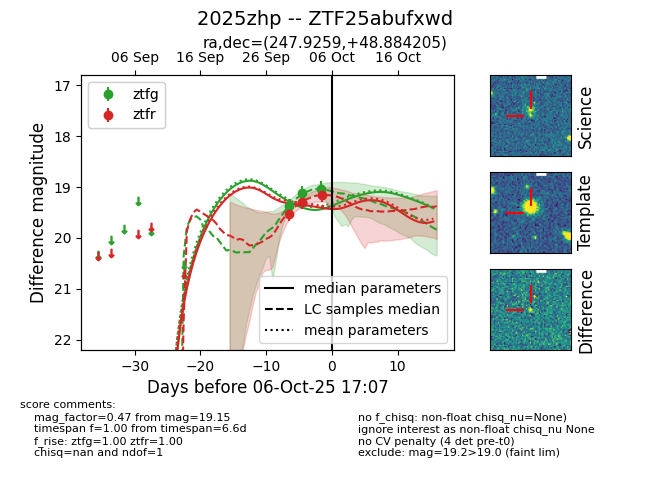
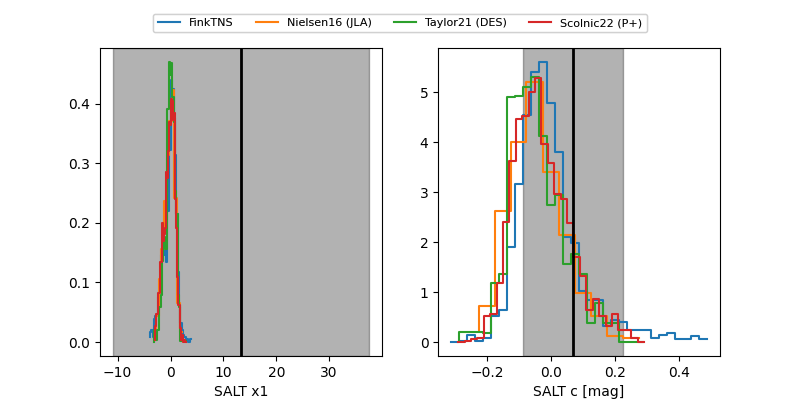

FINK: ZTF25abufxwd
Lasair: ZTF25abufxwd
ALeRCE: ZTF25abufxwd
TNS: 2025zhp
YSE: 2025zhp
ZTF25abufxwd (ztf,fink)
2025zhp (tns,yse)
equatorial (ra, dec) = (247.9259,+48.88421)
galactic (l, b) = (75.7085,+42.73859)


last ztfg=19.04, ztfr=19.15
3 ztfg, 3 ztfr detections